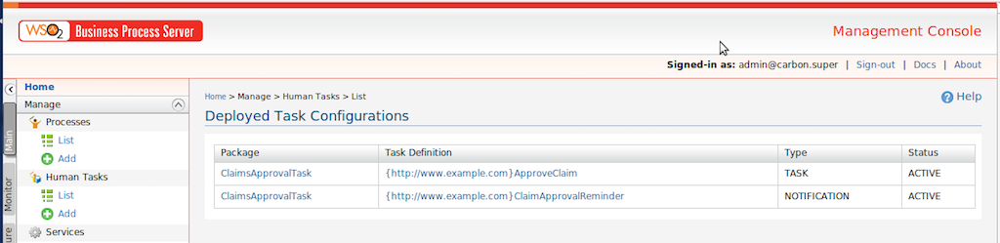
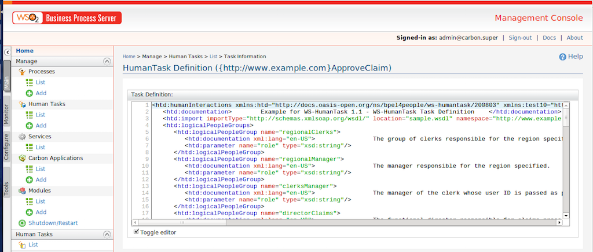
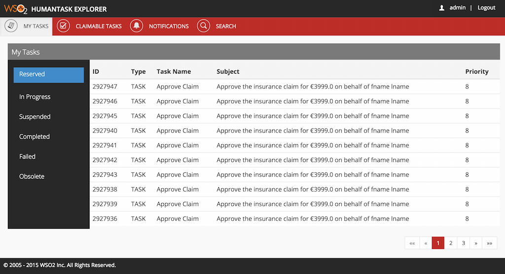
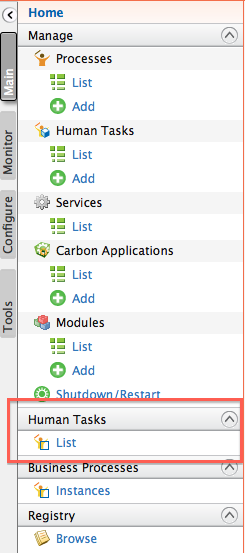
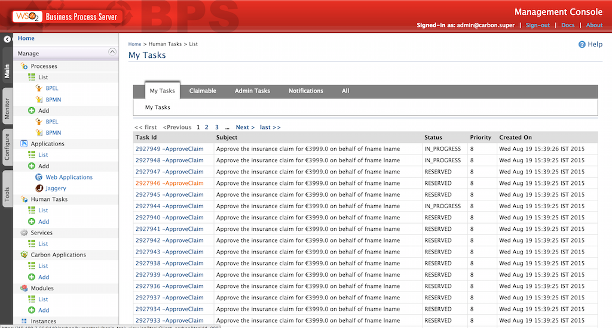
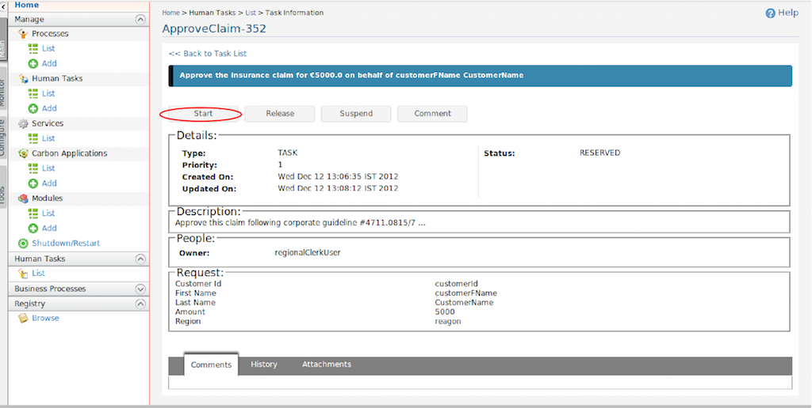

WSO2 Human Task commponent implements the WS-Human Task specification. It has WS-Human Task API and UI which expose the functionalities in Task Management API.
For complete documentation, please refer documentation package of WSO2 Business Process Server.
Go to Main -> Human Tasks -> Add.
Browse to and select Human Task archive, and click Upload.
Click OK in the confirmation message and then refresh the page.
The deployed task definitions appear in the deployed task configurations list as shown below.
You can click a task definition to view it. The definition of ApproveClaim task sample looks like this:
Human tasks can be created by invoking the corresponding human task's web service (usually via a BPEL process). Permitted users can view and change the status of each tasks. There are two options to view the human tasks.
Human Task Explorer web application can be used to view and manipulate human tasks for end users. It is implemented in a more user friendly manner than the management console. Same credentials for the management console can be used to ligin to the web application. Default url of the Human Task explorer is https://<bps-host>:<bps_port>/humantask-explorer/
Go to Main -> Human Tasks -> List (be sure to click the link lower down in the left navigation pane, not the one in the Manage group).
The tasks appear in the My Tasks list.
In the Task ID column, click the link to view task info and do changes for a task.
